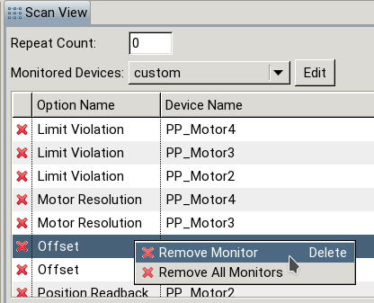

What’s New Archive (EVE Editor)
back to What’s New
Version 1.34.4 (2021-01-20)
- [Bug Fix-#5761] Fixed a bug where an ArrayOutOfBoundsException occurred when choosing “none” for a detector channel of a plot window when no channel was previously set
- [Bug Fix-#5752] Fixed a bug where a null pointer exception occurred in the Scan View if the last scan was closed and another opened afterwards
- [Bug Fix-#5743] Set the precision of the values in the preview table for positions in a position file to 7 (
12.4g -> 12.7g) - [Bug Fix-#5739] Fixed bugs related to main axis adjustments when adjust parameters of axis weren’t set to stepcount
- [Bug Fix-#5687] Fixed a bug where the position mode combo did not refresh its value in the Motor Axis View when the property was altered within the SM Axes / Channels View
- [Bug Fix-#5687] Fixed a bug where the normalization channel combo did not refresh its value in the Detector Channel View when the property was altered within the SM Axes / Channels View
- [Bug Fix-#5684] Fixed a bug where a non-ASCII SCML filename caused an error during File Loading (in the XML parser)
- [Bug Fix-#5590] Fixed a bug where line breaks could be inserted into a position list
- [Bug Fix-#5433] Increased delay of range input in Motor Axis View, tooltip of ranges and position lists in SM Axes / Channels View now show only #positions if position count is greater than 50.
Version 1.34.2 (2020-09-03)
- [Bug Fix-#5596] Fixed a bug where changing the stepfunction in the Motor Axis View caused the cursor to jump to the first position after each (valid) input.
Version 1.34.1 (2020-08-17)
- [Bug Fix-#5556] Fixed a bug where the stepfunction could not be changed for discrete motor axes in the Axes Channels View.
- [Bug Fix-#5544] Fixed a bug where the motor axis and detector channel views did not refresh after changing motor axis stepfunction or detector channel acquisition type.
- [Bug Fix-#5443] Fixed a bug where the program crashed trying to show a range tooltip with “too much” values (now limited to 50).
Version 1.34.0 (2020-07-31)
- [Feature #5094] Deletion of multiple selected motor axes / detector channels.
- [Feature-#4921] Revised layout of the Editor Perspective. Note that if you upgraded from an older version a one time reset of the Editor Perspective is necessary.
- [Feature-#4917] Introduced new View SM Axes / Channels View replacing “Motor Axis” and “Detector Channels” “Action” tabs of the Scan Module View. Values are editable directly in the table column.
- [Bug Fix-#5444] Fixed a bug where the statistics table of a position file motor axis did not refresh after changing the file in the newly introduced SM Axes / Channes View.
- [Bug Fix-#5225] Fixed a bug where removing the trigger interval entry of a detector caused an error.
Version 1.33.0 (2020-01-22)
- [Feature-#4915] updated Scan-/Chain-View (moved scan related properties)
- [Bug Fix-#5011] The number of positions is calculated correctly now in the editor (after changing the counting in the engine according to nested scan modules)
Version 1.32.0 (2019-09-02)
- [Feature-#4862] added “Values” column to the Motor Axes Table of the ScanModuleView.
Version 1.31.2 (2019-07-31)
- [Bug-#4541] fixed a bug where an IllegalArgumentException was thrown for an empty repeat count
Version 1.31.1 (2019-07-04)
- [Bug-#4734] fixed rounding of double values when using axes in range mode
Version 1.31.0 (2019-05-27)
- [Feature-#4260/#1991] introduced dynamic snapshot scan modules. Dynamic snapshots allow determining the list of devices not until the scan is executed.

More information on scan module types can be found in the topics Scan Description and Scan Module View.
- [Bug-#3780] Entering negative Limits for detector channel average measurements is now disallowed (using absolute value).
Version 1.30.5 (2019-02-26)
- [Bug Fix-#4411] fixed a bug where the channel access connection failed in the MotorAxisView
Version 1.30.1 (2018-11-22)
- [Bug Fix-#4367] fixed a bug where a null pointer exception occurred if a detector channel used as a plot channel was deleted
Version 1.30.0 (2018-11-22)
- [Feature-#3908] The Graphical Editor now allows adding prepended scan modules:
- [Feature-#3903] The newly introduced Batch Update View allows updating multiple files to the current SCML version used by eveCSS. For more information consult the concept description and the example.
- [Feature-#3244] (comfortable) option to remove monitors. Monitors now can be removed by clicking on the delete column or by using the context menu:

- [Feature-#3243] IDs of plot windows can now be edited in the same way as the other attributes. If an ID is used in another scan module an info message is shown in the plot window view as well as the scan module view:
- [Bug Fix-#4241] fixed a bug where the limits and current position were not shown in the MotorAxisView due to a race condition which lead to a negative connection count
- [Bug Fix-#4146] fixed a bug where the step count was negative (and incorrect) in descending cases
- [Bug Fix-#3243] fixed a bug where the plot information in the scan module view did not show normalization channels
Version 1.29.4 (2018-06-12)
- [Bug Fix-#3949] fixed a bug where certain inputs of a range stepfunction lead to a lag due to an overflow
- [Bug Fix-#3945] fixed a bug where a SCML file embedded in a h5 file could not be opened due to a missing temporary folder
- [Bug Fix-#3902] fixed a bug where moving a scan module in the graphical editor could lead to (illegal) negative coordinates
Version 1.29.2 (2017-01-25)
- [Bug Fix-#3945] fixed a bug where an SCML file embedded in an HDF5 file could not be opened due to a missing temporary subfolder
Version 1.29.0 (2018-01-05)
- [Feature-#3167] The Editor now detects and reports if a SCML of a “future” version should be loaded
- [Feature-#2740] The option “save scan description” now embeds the SCML in the HDF5 file (instead of creating a new file with same prefix). The Editor is now capable of opening SCML and HDF5 files (with embedded SCML). If no SCML is embedded in the HDF5 file a warning is shown.
Version 1.28.2 (2018-01-04)
- [Bug Fix-#3735] fixed a bug where the “as in device definition” monitor list of a file was not adjusted with the current device definition during loading of the file
- [Bug Fix-#3731] fixed a bug where (pre-/postscan) Devices used in a scan were not monitored
- [Bug Fix-#3520] fixed a bug where the detector channel help page was not displayed
Version 1.28.0 (2017-07-28)
- [Feature-#3286] added EPICS long string support for filename PV macro
- [Feature-#2880] added new step function “range” for generating position lists
- [Feature-#2782] added macro support for chain comment (analog to filename macros)
- [Feature-#0179] added plot window modifier (available values are
none and times-1)
Version 1.27.14 (2017-09-19)
- [Bug Fix] fixed a bug where a scan description with a version newer than the program version could be loaded
- [Bug Fix] fixed a bug where an invalid scan description (due to schema validation) could be loaded
- [Bug Fix] fixed a bug where a scan description prior to schema version 2.3 (not supported) could be loaded
Version 1.27.13 (2017-07-06)
- [Bug Fix] fixed a bug where errors in a scan module were not reflected in the editor (as a red bar) after loading a scan (a scan could contain errors after loading if devices not present anymore are removed automatically)
- [Bug Fix] fixed a bug where unnamed scan modules in a SCML file of oder versions could not be updated (and therefore not loaded)
- [Bug Fix] fixed a bug where defaults motor values of discrete motors were overridden by channel access
Version 1.27.10 (2017-04-19)
- [Bug Fix] fixed a bug where adding devices (axes, channels, prescans, postscans, positionings or plots) to a scan module caused a memory leak
- [Bug Fix} fixed a bug where opening the monitor selection dialog caused a memory leak
Version 1.27.9 (2017-04-11)
- [Bug Fix] fixed a bug where adding multiple devices via “Add All” caused a memory leak
- [Bug Fix] fixed a bug where saving a file caused a memory leak
Version 1.27.7 (2017-03-30)
- [Bug Fix] fixed a bug where a plot window of a copied scan module did not have the same id as the original
Version 1.27.6 (2017-03-22)
- [Bug Fix] fixed a bug where a channel does not get defaults after its acquisition mode was (re)set
- [Bug Fix] fixed a bug where an eror occurred when deleting a channel used as a stopped by channel
Version 1.27.5 (2017-02-02)
- [Bug Fix] fixed orpahned help link in the scanmodule view
- [Bug Fix] fixed a bug where the working directory path was not set in the file dialog of Open SCML
Version 1.27.4 (2016-12-21)
- [Bug Fix] fixed a bug where the (de)selection of monitor options table columns caused a program freeze
Version 1.27.3 (2016-12-12)
- [Bug Fix] adding channel snapshot scan modules (or converting them via fill options) and removing a channel (from a channel snapshot module) does now take a reasonable time (again, and does not scale non-linearly with the number of devices)
Version 1.27.2 (2016-11-24)
- [Bug Fix] Fill Actions (Axis Snapshot, Channel Snapshot and Empty) are now executing as fast as the preconstructed Editor Tool equivalents.
Version 1.27.0 (2016-11-09)
- [Feature] Devices not found when loading a scan description (SCML) are now shown by name (and PV)
- [Feature] introduced interval mode for detector channels (previous behavior is now called standard mode) allowing mean calculation
- [Feature] improved Detector Channel View to show multiple normalized channels if any
- [Feature] the Scan Module View has two additional columns (showing normalization and the newly introduced stopped by of an interval channel)
- [Feature] the location of measurement data is now fixed (default/alternate can no longer be defined in Scan Module View)
- [Feature] Save Axis Positions and Save Channel Values are now called Axis Snapshot and Channel Snapshot
- [Bug Fix] The Detector Ready Event menu no longer shows the channel itself
- [Bug Fix] The Schedule Event menu no longer shows the module itself
Version 1.26.0
- [Feature] added two digit year macro for file names
- [Feature] File Save as now has a default preset (folder of currently open file)
- [Feature] Warning/Error messages of CSV import can now be enabled/disabled in the preferences
- [Feature] the position count of motor axes is now shown in the axes table of the ScanModuleView
- [Feature] permanently disabled SM storage combo box (the place where certain data is written is now fixed)
- [Feature] the position list of a motor axes can now be saved into a text file
- [Bug Fix] fixed a bug where File save as did not warn if file already exists
- [Bug Fix] fixed a bug where a detector stop was not properly saved (and thus was not usable in scans)
- [Bug Fix] fixed a bug where axes were accidently removed from plot windows due to CSV import
- [Bug Fix] fixed a bug where the values of a discrete motor imported via CSV import were overwritten due to channel access read
- [Bug Fix] removed a memory leak where the context menu of motor axes selection was not garbage collected due to a still existing reference (listener)
Version 1.25
- [Feature] Motor Axis and Detector Channel Order are now changeable via Drag n Drop in the ScanModuleView
- [Feature] introduced a new macro for two digit year (Chain View filename)
- [Bug Fix] fixed a bug where (non-existing) folders were not created during SCML creation
- [Bug Fix] fixed a bug where the live preview of the filename macros did not show a leading zero within calendar week 1 through 9
- [Bug Fix] fixed a bug which could lead a a SAXParseException during SCML Loading
Version 1.24
- [Feature] the data file name (Chain View) id now also viewable in its tool tip
- [Feature] introduced hot keys for sending scans from the editor to the engine
- [Feature] introduced hot key for faster axis bounds input
- [Feature] the main axis can now be replaced (without resetting the previous one)
- [Feature] improvements in memory consumption
- [Bug Fix] fixed a bug where the stop entry of a detector was missing in the saved SCML file
- [Bug Fix] invalid position list entries are now replaced by the saved value when the text field looses focus
- [Bug Fix] fixed a bug where inserting a main axis which was a main axis by default caused having multiple main axes
- [Bug Fix] replaced SWT Version due to a native memory leak
- [Bug Fix] fixed a bug where the defaults directory was not properly updated during SCML loading
- [Bug Fix] fixed a bug where the action property of pause events was ignored during SCML loading
Version 1.23
- [Feature] Report uses of a Channel as normalize channel when removing it from a scan module
- [Feature] Redo Events of Detector Channels are now saved within user defaults
- [Feature] the Chain View filename’s macros are now being resolved
- [Feature] introduced File->Open Scan Description and modified toolbar command for better SCML Handling
- [Bug Fix] fixed a bug where main axis adjustments malfunctioned after copy/pasting a scan module
- [Bug Fix] fixed a bug where normalization was missing after loading a SCML file or copying a scan module
- [Bug Fix] fixed a bug where the editor could not be initialized due to missing defaults
- [Bug Fix] fixed a bug where the lost devices dialog (SCML loading) showed the name of the temporary file
Version 1.22
- [Feature] introduced new file name macros MONTHSTR and DAYSTR
- [Feature] now taking account for detector channels with save value preset
- [Feature] now taking account for detector channels with deferred trigger preset
- [Feature] added select all for monitor options
- [Bug Fix] fixed a bug where elements of action composite tables did not refresh properly
- [Bug Fix] removed possibility to create “double normalization” due to default automation
- [Bug Fix] fixed a bug where using a detector ready event did not work due to missing XML entry
- [Bug Fix] switching monitor options to custom no longer removes previos entries
- [Bug Fix] fixed a bug where certain classes were missing in monitor options selection tree
- [Bug Fix] fixed a bug where an axis was not selected after it was added to a scan module
- [Bug Fix] fixed a bug where the event tab of a detector channel was not shown by default
Version 1.21
- [Feature] added scan module template for top up mode
- [Feature] a channel is now automatically added if it is used as a normalize channel in saved defaults
- [Bug Fix] fixed a bug where the file name did not refresh in the scan view after save as
- [Bug Fix] fixed a bug where a normalize channel was lost after adding a new channel
- [Bug Fix] fixed a bug where main axis adjustments were not executed after loading a SCML
- [Bug Fix] fixed a bug where the status and moveDone PVs were lost after saving a SCML
Version 1.20
- [Feature] added CSV import of motor axes position lists
- [Feature] File mode axis default path is now context sensitive
- [Feature] Discrete values options for pre- and post scans are now read from CA
- [Bug Fix] fixed a bug where the ScanView did not refresh after save as...
- [Bug Fix] fixed a bug where loading motor axes with certain step functions threw an Exception
Version 1.19
- [Feature] Added Cut, Copy and Paste for the Editor
- [Feature] Removed “Append Schedule Event” and “Send Detector Ready Event” options (now all Scan Modules and all Detectors are available automatically)
- [Feature] The Scan View now contains a table showing all active monitors
- [Bug Fix] fixed a bug where the plot did not auto scale correctly at the start of a scan
- [Bug Fix] fixed a bug where the storage option was not set to alternate for non-classic scan modules
- [Bug Fix] fixed a bug where a detector channel used as detector event was falsely written (and loaded) in XML when used more than once
- [Bug Fix] fixed a bug where no default values were given for a motor axis after switching step function
- [Bug Fix] fixed a bug where a motor axis did not adjust for main axis after changing step function
- [Bug Fix] Monitor Options are now always valid (not only after saving)
- [Bug Fix] Schedule and Detector Events are now removed if their corresponding trigger (scan module or detector channel) is removed / not present in the scan
Version 1.18
- [Feature] It is now possible to load SCML files from earlier versions (at least v1.17)
- [Bug Fix] fixed a bug where deleting a device caused selection of the last item
- [Bug Fix] Adding axes or channels to “special” scan modules no longer sets their attributes depending on defaults
- [Bug Fix] Monitors whose Parent is deleted/not available anymore are now removed
Version 1.17
- [Feature] The Monitor Options Dialog now supports selection of classes
- [Bug Fix] fixed a bug where devices were not monitored when “custom” was selected
- [Bug Fix] fixed a bug where a normalize channel got lost while loading an scml file
- [Bug Fix] fixed a bug where a combo box did not open properly (immediately closed) for discrete options
Version 1.16
- [Feature] monitor option improvements
Version 1.15
- [Feature] added/revised several Help topics
- [Bug Fix] Missing pre-/postscan devices are now detected and handled properly
- [Bug Fix] fixed a bug where a null pointer occured when editing the value field of pre-/postscan entries
- [Bug Fix] fixed a bug where a combo box editor did close immediately after opening it (pre-/postscan entries)
Version 1.14
- [Feature] the list of options that are monitored is now editable
- [Bug Fix] removed a bug where some views were not reset when a scan module was deleted
- [Bug Fix] saving an “empty” scan description no longer violates the schema definition
- [Bug Fix] the motor axis view no longer shows warnings for axes of type local (pseudo motors, e.g. msecTimer, Counter)
Version 1.13
- [Bug Fix] Trigger Delay now accepts 0 as input
- [Bug Fix] removed a bug where a scan description containing an axis with relative time could not be saved
Version 1.12
- [Feature] Introduced the Scan View (remember to reset the editor perspective)
- [Feature] Improved overall usability of text input fields, especially for the comment (Chain View)
- [Bug Fix] fixed a bug where a normalized channel was accidently reset in the plot window view when it was previously set in the detector channel view and afterwards set to none
- [Bug Fix] fixed a bug where a once set normalize channel of a positioning could not be removed anymore (except by deleting and recreating the whole positioning)
Version 1.11
- [Feature] It is now possible to reconnect source and target of connections in the GEF Editor
- [Feature] Improved text entry behavior (by delaying the listeners for a short time period)
- [Bug Fix] fixed a bug where the add to play list button eventually took the wrong file due to timing issues
- [Bug Fix] removed a bug where setting a newly created motor to file mode caused an error
Version 1.10
- [Feature] positions in a position file/list are now validated and counted
- [Feature] the number of positions per scan module / chain is now calculated (and shown via tool tip)
- [Bug Fix] fixed a bug where reading a data file containing empty lines led to an error
- [Bug Fix] the lost devices dialog is now shown in a centered position to its parent
Version 1.9
- [Feature] Added data filename macros for year, month and day
- [Feature] Added zoom capability to the GEF Editor
- [Bug Fix] fixed a bug where the connections in the GEF Editor were corrupted after scrolling
- [Bug Fix] fixed a bug where adding a scan module to a scan module of type other than classic caused the added scan module to be of the same type
- [Bug Fix] fixed a bug where non-classic type scan modules were not filled as intended during creation
- [Bug Fix] fixed a bug where the scan module appended to the start event was not saved properly
- [Bug Fix] fixed a bug where the connection create tool could not be used with the start event as source
- [Bug Fix] fixed a bug where the validation feedback of a given file name (axis positions) was not correct
Version 1.8
- [Feature] select all on focus for text inputs
- [Feature] redesigned
ScanModuleView - [Feature] added channel property deferred trigger, read more
- [Feature] changed default point style when plot window is created from NONE to POINT
- [Feature] changed data file path default from
data to daten - [Feature] previously defined values of devices are now remembered and set as default (except for plugins)
- [Feature] added GEF Creation Tools
Save Axes Positions and Save Channel Values
- [Bug Fix] fixed a bug where settings of a plot axis were accidently been removed when the detector was changed
- [Bug Fix] fixed a bug where multiple instances of fill option jobs could be run in parallel
- [Bug Fix] fixed a bug where a normalize channel was requested of a non existing second plot axis due to missing initialization
Version 1.7
- GEF (Graphical Editor)
- [Feature] Create orphan Scan Modules
- [Feature] introduced Connection Create Tool
- [Feature] Connections can be deleted
- [Feature] improved MotorAxisView inputs for date time values and durations
- [Feature] introduced MotorAxis concept help entry
- [Feature] introduced content proposal in the MotorAxisView (Dates and Durations could now be entered via a dialog)
- [Feature] the too restrictive normalize channel feature (Version 1.4) is extended again
- [Bug Fix] fixed a bug where the Motor Axis calculations where not correct if a “Main Axis” existed
- [Bug Fix] fixed a bug where an “empty” scan (containing the start event only) could not be saved
- [Bug Fix] fixed a bug where a set normalize channel was not reset if it was deleted from the scan module
Version 1.6
- [Feature] reimplemented the Editor using the Graphical Editing Framework
- [Feature] (re-)implemented user interactions on ScanModules: Rename, Move, Delete, Create Appended/Nested
- [Feature] interactions are now part of the introduced command stack (i.e. they support undo/redo)
- [Feature] introduced a Palette including “Select” and “Marquee” tools
- [Feature] the editor content is now printable
- [Bug Fix] removed a bug where a scan description was send to the engine although saving it failed
Version 1.5
ScanModuleView Actions tables- [Feature] added “Add All” context menu entry
- [Feature] added delete button for table entries
- [Feature] name column of (Axes and Channels) table is now sortable
- [Feature] introduced Channel Access
- [Feature] show current motor position and limits in
MotorAxisView - [Feature] Axis inputs are validated with limits
- [Feature] discrete motor positions are retrieved (if available)
- [Bug Fix] revised manual trigger behavior: manual triggering is now available for axes and channels via the
ScanModuleView - [Bug Fix] the number of measurements per motor position is now configurable
- [Bug Fix] removed a bug occurred while loading an scml file containing a plugin which doesn’t exist in the device definition file
- [Bug Fix] fixed an inconsistent view state after the last open editor was closed
Version 1.4
- [Feature] Normalize Channel for Detector Channels
- [Bug Fix] fixed scrolling issues in
Detector Channel View - [Bug Fix] fixed a bug where the selection was not properly propagated resulting in an inconsistent editor state, however the auto selection of devices had to be disabled
Version 1.2
- [Feature] Pause events now pause or continue the scan (or both)
- [Feature] Normalize Channel for Detector Channels (DetectorChannelView)
- [Feature] Names for Plot windows
- [Feature] Consistent presentation of device names (including lexicographical ordering)
- [Feature] Remove All Axes/Channels/Prescans/Postscans/Positionings/Plots/Events
- [Bug Fix] Selecting a Detector Channel in a Plot fails on first attempt
Version 1.1
- [Feature] Fill options “Save all Motor Positions” and "Save all Detector Values"